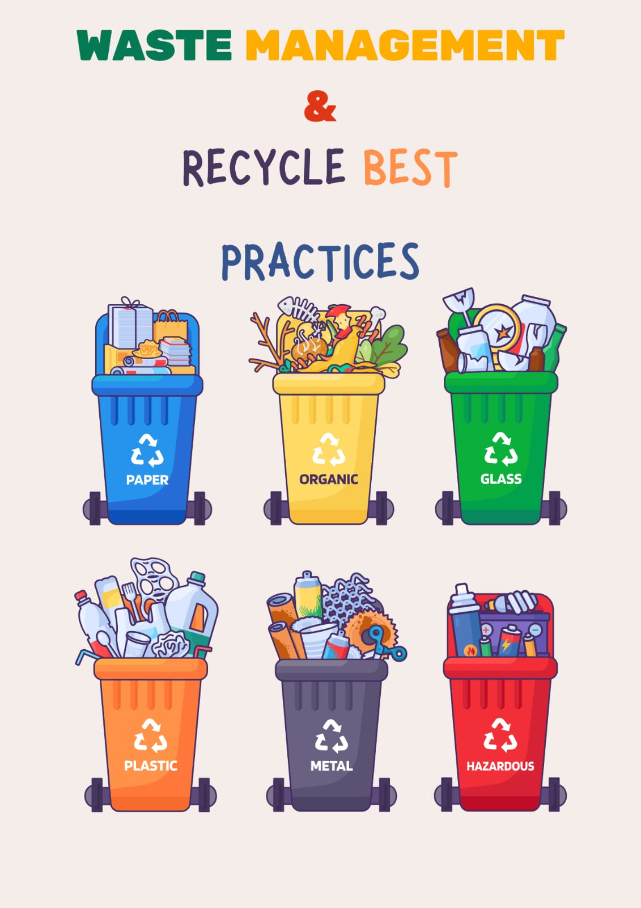
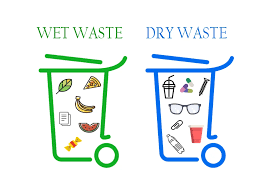
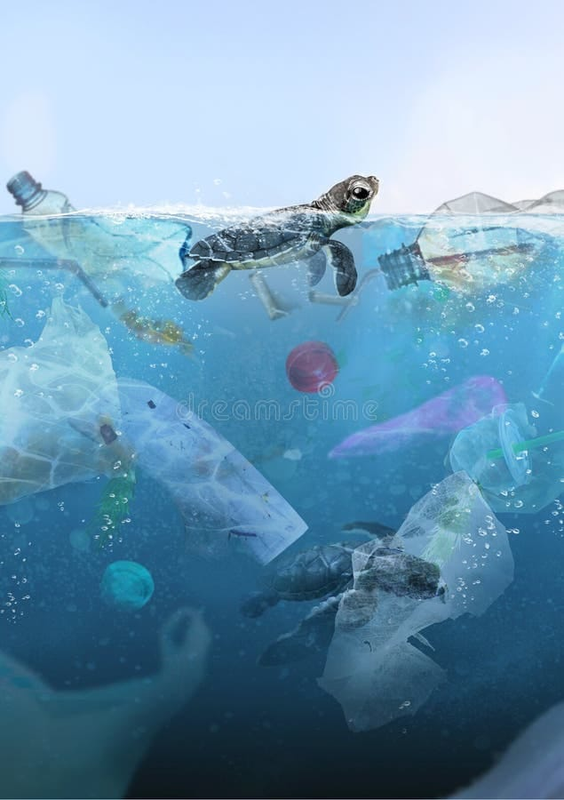
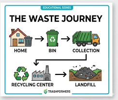

Explore visual guides to understand waste segregation and responsible waste management.

💡 Key Takeaway: Different types of waste should be separated before disposal to improve recycling and reduce environmental harm.

💡 Key Takeaway: Wet waste is biodegradable while dry waste contains recyclable materials such as paper, plastic, glass and metal.

💡 Key Takeaway: Plastic waste often reaches rivers and oceans, harming marine life and polluting ecosystems.

💡 Key Takeaway: Waste follows a journey through collection, sorting, recycling or landfill processing.